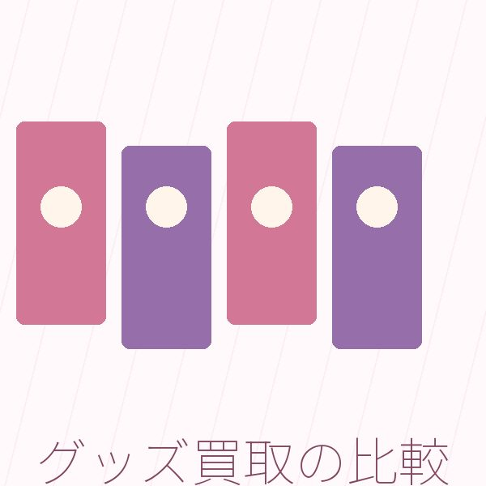

記事一覧
 光回線
光回線
ドコモ光 乗り換え｜工事費とキャッシュバックの確認ポイント
工事費・受取時期・契約期間の3点を押さえて失敗しない乗り換えを。
記事を読む →
光回線比較
光回線 乗り換え 比較 2026｜ドコモ光・SoftBank光・フレッツ光
主要5サービスを工事費・特典・契約期間で比較。失敗しない選び方を解説します。
記事を読む →
グッズ買取グッズ買取 相場｜売る前に比較したいポイントと手順
査定額を上げる準備と、買取サービスの選び方を整理しました。
記事を読む →回線別の記事
光コラボ
GMO光アクセスの実測速度と選び方
転用・事業者変更で工事なし乗り換え。下り630Mbps台。
記事を読む →
光コラボ
SoftBank光の実測速度と選び方
ソフトバンク・ワイモバイルのセット割が魅力。
記事を読む →
NTTフレッツ
フレッツ光の実測速度と選び方
全国の光回線基盤。プロバイダ選択が速度を左右。
記事を読む →
独自回線
NURO光の実測速度と選び方
下り976Mbps・Ping11.5ms。速さ最優先なら有力候補。
記事を読む →
独自回線
auひかりの実測速度と選び方
夜間低下-5%・上り622Mbps。auユーザーに。
記事を読む →当サイトについて
運営方針
公式情報をもとに比較します
実際に利用していないサービスについて、使ったような体験談は書きません。広告主が公開している条件・仕様を整理しています。
透明性
広告であることを明記
各ページの先頭にアフィリエイト開示を掲載。リンク先は広告主の公式サイトです。ユーザーの料金は公式サイトと同じです。